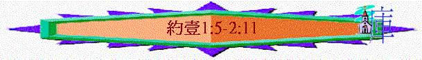

|
永生的確認與流露 |
||||
|
永生的源頭 |
永生的真偽 |
永生的表現 |
永生的明證 |
永生的確認 |
|
1:1-4 |
1:5-2:27 |
2:28-3: |
3:24b-5:12 |
5:13-22 |
∼特色：很多「若說」(1:6,1:8,1:10,2:4,2:6,2:9)；真/真理(True/truth)(1:6,1:8,2:4,2:8,2:21,2:27)、說謊/虛謊(1:6,1:10,2:4,2:21,2:22)等字眼，而且比其他段落更多，也有很多黑暗與光明比較的字眼(1:5,1:6,2:9-11)
∼背景：當時很多信徒停留在言語、知識、在生活中沒有真實永生的表現，另外2:18提及有好些敵基督的來了，他們是虛謊，不是在主裡，是假的。
∼內容：作者將真實有永生表現的信徒與虛謊的假信徒作一個比較，要信徒活在光明中，流露永生表現，也要提防一些假的信徒
1.真實的永生(1:5-2:17)
「我們若在光明中行，如同神在光明中，就彼此相交，他兒子耶穌的血也洗淨我們一切的罪。」1:7
「我們若遵守他的誡命，就曉得是認識他。」2:3
「愛弟兄的，就是住在光明中，在他並沒有絆跌的緣由。」2:10
「不要愛世界和世界上的事。人若愛世界，愛父的心就不在他裡面了。」2:15
∼「與神相交」、「認識祂」、「住在光明中」、「愛父的心」就是有永生的人所擁有的特質，沒有永生的人，他不會愛神，也不認識神，更不可能住在神裡面與神相交，而真實擁有以上特質的人，他們會有以下表現流露
A.不犯罪(1:5-2:2)
a.不犯罪的原因----神就是光
「神就是光，在他毫無黑暗。這是我們從主所聽見、又報給你們的信息。」約壹1:5
「耶穌又對眾人說：「我是世界的光。跟從我的，就不在黑暗裡走，必要得著生命的光。」」約8:12
∼神就是光，是神的本性，代表神是光明，在祂毫無黑暗(in
him is no darkness at all)，稍為有一點點黑暗、罪污，不光明的事也沒有。
∼而神是光的真理，是他們從主所聽見，而現在報給他們的
∼神既是光，我們作為光明之子，住在光中就不能有半點黑暗及不義了！
「你們若知道他是公義的，就知道凡行公義之人都是他所生的。」約壹2:29
「神差他獨生子到世間來，使我們藉著他得生，神愛我們的心在此就顯明了。」約壹4:9
∼而作者會刻意用神的本性，來帶出我們在世應有的表現，例如神是公義，所以我們要行公義，神是愛，所以我們有愛
b.對罪錯誤觀念(1:6-10)
∼此段有三個「若說」字眼，是他們有一些錯誤的觀念，所以作者要糾正他們，他們的錯誤：
(1)與神相交仍可在黑暗中
(A)責備錯誤
「我們若說是與神相交，卻仍在黑暗裡行，就是說謊話，不行真理了。」1:6
∼神是光，若說與光明的神相交，彼此有共同的特質，互相有聯合，但他仍在黑暗中，完全是違反神的本性，此人是說謊話，騙人的，講不合真理的事，也不行真理，真理是要我們在光明中，但人卻不行，行在黑暗裡(而當時的異端認為身體不能沾污裡面的靈，人作甚麼惡事，也只是增加自己的知識與經歷，所以與神相交，仍不要有道德的生活)
(B)當有態度
「我們若在光明中行，如同神在光明中，就彼此相交，他兒子耶穌的血也洗淨我們一切的罪。」1:7
(a)繼續行在光明中
∼「若在光明中行」是現在式，有持續恆常性，信徒應效法不變的神，祂永遠活在光明中，我們也應持續行在光明裡面
(b)無阻隔與肢體彼此相交
∼人若行在光明中，沒有恨，沒有對肢體不好的惡念，我們有光明的人就可以共同彼此在光中相交
(c)繼續靠主的血使我們光明潔淨
∼異端否認耶穌的神性，不認為他能救贖人，但作者肯定耶穌的血可以洗淨一切罪(all
sin)，所有罪也可解決，若信徒偶然被過犯所勝，但我們仍可在光明中，因主的血現仍有功效，而洗淨是現在式，是徹底洗淨
∼也帶出下文人若犯罪應怎辦的方法
(2)說自己沒有罪性
(A)責備錯誤
「我們若說自己無罪，便是自欺，真理不在我們心裡了。」1:8
∼有人說自己「無罪」，此罪是單數，是形容自己的本身沒有罪的特質，沒有罪性
∼之前，作者責備他們對人說謊，今次責備更嚴重，是對自己說謊，自己欺騙自己(自欺)，用自己合理的說法掩蓋自己的罪性，令自己也受騙，是何等無知！
∼之前說不行真理，今次更責備真理不在他們的心，人若有真理，必知道對錯，真理能使人認識自己本相，知道自己的本性是傾向不義，人若自義，即真理根本不在心裡，他也沒有被真理光照！
(B)當有態度
「我們若認自己的罪，神是信實的，是公義的，必要赦免我們的罪，洗淨我們一切的不義。」1:9
(a)承認自己有罪
∼不是否認，是承認，而此「罪」是雙數，不單承認自己有罪性，更承認自己有很多罪
(b)相信神赦免
∼人若承認自己有罪，神必赦免人一切罪，而且不單赦免，也洗淨一切不義，是所有(all)的不好，不合乎神標準的事
∼而神能赦免人的罪之原因，也是由於祂的本性
∼祂是信實的：祂在耶利米書曾應許另立新的約，可以赦免人的罪，所以人即使有不義，神赦免人的應許仍不變
∼祂是公義的：加上神也是公義，會更確實此赦免的原則；祂以耶穌為挽回祭，承擔在律法下犯罪的要求----要受罰，既然神是公義，主已滿足公義的要求，神再不會不義地當信主的人為有罪，另外神既然公義，若宣判了人無罪，就不會再追討
(3)說自己沒有犯過罪
「我們若說自己沒有犯過罪，便是以神為說謊的，他的道也不在我們心裡了。」1:10
「你的民若得罪你（世上沒有不犯罪的人），你向他們發怒，將他們交給仇敵擄到仇敵之地，或遠或近，」王上8:46
∼有些人不單說自己無罪性，也沒有犯罪，作者責備他們，比之前更嚴重，之前說那些人是說謊，那些人是自欺，這次更進一步說他們更以為神是說謊，在聖經中已顯明祂的真理----世上沒有不犯罪的人，人若說自己沒犯罪，便當神所說的不真實，是欺騙人
∼而之前說「不行真理」「真理不在我們心�堣F」，今次加深「祂的道也不在我們心�堣F」比真理更廣闊，因神的道可指神的話，而神也是道，他連神自己也不在心裡，因他心中沒神，否定神的說話，藐視祂的法則
c.不犯罪的勸勉(2:1)
「我小子們哪，我將這些話寫給你們，是要叫你們不犯罪。若有人犯罪，在父那裡我們有一位中保，就是那義者耶穌基督。」2:1
∼「我小子哪」(My
little chirdren)，作者用父親的角式親切的說明他寫此書的目的，是叫他們不要犯罪，一件罪也不要犯，因我們是活在光明中，神是光，所以與光同行的人就不應在黑暗裡了
d.犯了罪的出路(2:1-2)
「我小子們哪，我將這些話寫給你們，是要叫你們不犯罪。若有人犯罪，在父那裡我們有一位中保，就是那義者耶穌基督。他為我們的罪作了挽回祭，不是單為我們的罪，也是為普天下人的罪。」2:1-2
(1)主是中保
∼「中保」直譯Beside
Caller，可以呼召到身邊的人，在法庭上特別是指辯護律師，而約翰也曾在約翰福音上用此字眼形容聖靈是保惠師，替我們代求，耶穌也一樣，在父要審判我們，祂是我們的代求者，是我們中間幫助者，我們藉祂至終可以無罪釋放
(2)主是義者耶穌基督
∼祂是義的(righteous)，可以代替我們不義，祂也是公義，祂會用公義的方法----為我們死，代替我們不義
∼祂是耶穌，有祂的人性，以人的樣式代替我們，祂也是基督，是救世主，能救贖我們一切罪
(3)主為我們的罪作了挽回祭
「神設立耶穌作挽回祭，是憑著耶穌的血，藉著人的信，要顯明神的義；因為他用忍耐的心寬容人先時所犯的罪，」羅3:25
「所以，他凡事該與他的弟兄相同，為要在神的事上成為慈悲忠信的大祭司，為百姓的罪獻上挽回祭。」來2:17
∼「挽回祭」可譯”Propitiatory
shelter”安撫的、和解的避難所、隱蔽處，而施恩座也有類似意味，也譯”Propitiatory
shelter”
∼耶穌是祭司，為我們的罪，也是為普天下人的罪成了挽回祭，獻上自己，令神人關係可以和解，令我們的罪也得著掩蓋
B.遵主命(2:3-6)
∼一個從神而生的人，會遵守主的命令，而遵守主的命令會帶來以下結果：
a.確知是認識主
「我們若遵守他的誡命，就曉得是認識他。人若說我認識他，卻不遵守他的誡命，便是說謊話的，真理也不在他心裡了。」約壹2:3-4
「我們遵守神的誡命，這就是愛他了，並且他的誡命不是難守的。因為凡從神生的，就勝過世界；使我們勝了世界的，就是我們的信心。」5:3-4
∼一個真正認識主，與主有深入認識的人，他是有永生的人，他天然會遵守主的誡命，因他是從神而生，神也加力給他守主的命令
∼而當他遵主命，更確實顯出他是從神而生的，是認識神
∼「遵守」有”keep”的意思，要持守主的誡命，不會偏離
∼而當時異端有看法是不一定要守道德的規條，只要在頭腦上認知奧秘的事，就可以的了，但作者強調人若說認識主，卻不守祂的誡命就是說謊，真理也不在他心��(因真理會使我們行主的命令)
b.確知愛神的心實在是完全
「凡遵守主道的，愛神的心在他裡面實在是完全的。從此我們知道我們是在主裡面。」2:5
「有了我的命令又遵守的，這人就是愛我的；愛我的必蒙我父愛他，我也要愛他，並且要向他顯現。」約14:21
∼愛主的人，天然會願遵的命令，若持續及時常守主的話，更印證他對主的愛是真的，是完全的
c.確知自己是在主裡
「凡遵守主道的，愛神的心在他裡面實在是完全的。從此我們知道我們是在主裡面。人若說他住在主裡面，就該自己照主所行的去行。」2:5-6
「遵守神命令的，就住在神裡面；神也住在他裡面。我們所以知道神住在我們裡面是因他所賜給我們的聖靈。」3:24
∼一個遵守主誡命的人，他真是屬於神、認識神，他更會確知自己是在主裡面
∼作者最後也勸勉人若說自己信在主裡(與主有深厚的契合)他更應按主所行的行
C.愛弟兄(2:7-11)
∼而主的誡命是甚麼？其中最重要的一條就是愛的誡命
∼此段說明一個真正在光明的人，是要不恨弟兄，愛身邊的人
a.愛弟兄的原因
(1)舊的命令----以前所領受過的
「親愛的弟兄啊，我寫給你們的，不是一條新命令，乃是你們從起初所受的舊命令；這舊命令就是你們所聽見的道。」2:7
∼此處講「一條」「命令」應是下文所講關乎愛的命令
∼異端強調知識，不重視愛，但作者提醒信徒以前他們從起初信主已接受了此舊命令，在教會中已公認是要守的，在舊約也有愛人如己的誡命
∼以前已領受過，為何今日要廢掉呢！
(2)新的命令----歷久常新的命令
「再者，我寫給你們的，是一條新命令，在主是真的，在你們也是真的；因為黑暗漸漸過去，真光已經照耀。」2:8
「我賜給你們一條新命令，乃是叫你們彼此相愛；我怎樣愛你們，你們也要怎樣相愛。」約13:34
∼若有人說此命令已過時，但他似乎不了解愛的命令也是新的命令，是歷久常新，不會因時代而己改變
(3)是真的可行的
∼「在主是真的」，愛人的誡命可以在主生平中顯露，主真是可以捨命愛人，是真實可以行出來，信徒也是真實可以行在生活中
(4)有新的環境推動
∼在過往，罪與黑暗似乎掌權，人不由自主跟從黑暗，但今天已是新的環境，黑暗漸漸過去(the darkness is past)，真光----耶穌已照顧，人可以從祂，有力勝過黑暗環境，有力愛身邊的人
b.恨弟兄的責備
「人若說自己在光明中，卻恨他的弟兄，他到如今還是在黑暗裡。」約壹2:9
∼人若說自己在光明中，應有力勝過黑暗，也應跟隨真光，守主的命令，愛弟兄的，但若他仍恨弟兄，他仍是在黑暗中，受恨、受黑暗支配
c.愛與恨的對比
(1)愛弟兄----住在光明中
「愛弟兄的，就是住在光明中，在他並沒有絆跌的緣由。」2:10
「若在黑夜走路，就必跌倒，因為他沒有光。」」約11:10
∼愛弟兄的人，他真是住在神裡，住在光明中，跟從真光，既然在光中，他就不會因黑暗而跌倒，不會在罪中失落
(2)恨弟兄----住在黑暗中
「惟獨恨弟兄的，是在黑暗裡，且在黑暗裡行，也不知道往那裡去，因為黑暗叫他眼睛瞎了。」2:11
「耶穌對他們說：「光在你們中間還有不多的時候，應當趁著有光行走，免得黑暗臨到你們；那在黑暗裡行走的，不知道往何處去。」約12:35
∼恨弟兄的人，仍是在罪中，仍是活在黑暗中，他如羊走迷，也迷失在黑暗中，不知道自己人生真正義的方向，犯罪及黑暗也使他瞎眼，自以為自己有義，自以為走正路，其實走向一條滅亡路。